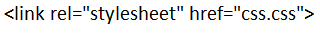

Ok, no necesitamos introduccion, tenemos que guardar un archivo de nombre css.css
(Como lo hicimos con HTML), lo abrimos con VSC. Primero aprenderemos a ponerle una fuente perzonalizada al texto
Porque por defecto, no viene así. Pondremos el siguiente código en el archivo CSS:
Ver el códigoy ahora si abrimos el index.html que creamos antes nos aparece... nada. Lo que pasa
es que necesitamos vincular el CSS con el HTML, y para eso en la cabeza de la página tenemos que poner el siguiente código: (Abajo de el título)
y ahora, si recargamos el index.html ¡Ya tenemos nuestra fuente personalizada!